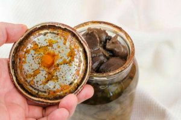

Botulismo
Tabla de Contenidos
Descripción
El botulismo es una intoxicación que afecta a los nervios periféricos y es causada por las denominadas toxinas botulínicas, producidas por la bacteria Clostridium botulinum. El botulismo es una afección poco frecuente, pero muy grave y potencialmente mortal.
Esta bacteria se encuentra comúnmente en el suelo y el polvo. Sus esporas son extremadamente resistentes y pueden sobrevivir en estado latente. Sin embargo, en condiciones con ausencia de oxígeno (anaerobias), como en alimentos enlatados incorrectamente, heridas profundas o el intestino de un lactante, estas esporas pueden germinar, crecer y liberar la potente neurotoxina.
Tipos y causas
Existen varias formas de contraer botulismo, pero todas son causadas por la misma neurotoxina. La diferencia principal radica en cómo la toxina ingresa y afecta al organismo.
Se clasifican varios tipos de botulismo en función del origen de la neurotoxina. Cuando esta es elaborada en vivo por la bacteria dentro del organismo, los tipos de botulismo son:
- Botulismo por herida: La neurotoxina se elabora en el tejido infectado cuando las esporas entran en una herida abierta y encuentran condiciones anaerobias.
- Botulismo por toxemia intestinal: Se ingieren las esporas de la bacteria (no la toxina ya formada), que germinan y crean la neurotoxina en el tracto digestivo. Esto incluye:
- Botulismo infantil: Es la forma más común. Afecta a bebés menores de un año, ya que su flora intestinal aún no está desarrollada para competir con la bacteria.
- Botulismo entérico del adulto: Muy infrecuente, ocurre en adultos con condiciones intestinales anormales (como cirugías o enfermedad de Crohn).
En otras ocasiones, la neurotoxina ya elaborada (preformada) se introduce en el organismo:
- Botulismo alimentario: Es la intoxicación clásica. La neurotoxina está presente en alimentos mal conservados o procesados inadecuadamente, especialmente conservas caseras poco ácidas.
- Botulismo iatrogénico: Ocurre por una sobredosis accidental de toxina botulínica inyectada con fines terapéuticos (por ejemplo, para tratar migrañas o espasmos) o cosméticos (Bótox).
- Botulismo por inhalación: Es extremadamente raro y no ocurre de forma natural. Podría ser resultado de un acto de bioterrorismo mediante la dispersión de la toxina en forma de aerosol.
Tipos principales (Resumen)
| Tipo | Causa | Síntomas principales | Tratamiento |
|---|---|---|---|
| Botulismo alimentario | Consumo de toxina en alimentos contaminados | Parálisis descendente, visión borrosa, vómitos | Antitoxina, cuidados intensivos |
| Botulismo infantil | Ingesta de esporas (ej. miel) que germinan en el intestino | Debilidad, llanto débil, estreñimiento, falta de succión | Antitoxina específica (BIG-IV), hospitalización |
| Botulismo por heridas | Infección de heridas profundas (a menudo por drogas) | Debilidad muscular (similar al alimentario), fiebre (por la herida) | Cirugía (limpieza), antitoxina, antibióticos |
Síntomas
Los síntomas del botulismo son neurológicos y se deben al bloqueo de la comunicación nerviosa por parte de la toxina. Esto causa una parálisis flácida descendente: los síntomas comienzan en la cara y descienden por el cuerpo. En el botulismo alimentario, suelen aparecer entre 12 y 36 horas después de comer el alimento.
Los signos clave incluyen:
- Trastornos del habla (voz gangosa o débil)
- Dificultad para tragar (disfagia)
- Sequedad de boca intensa
- Párpados caídos (ptosis)
- Visión borrosa o doble (diplopía)
- Debilidad muscular bilateral, progresiva y simétrica que desciende por el cuerpo
- Dificultad para respirar: Esta es la complicación más grave, ya que la parálisis de los músculos respiratorios (como el diafragma) puede llevar a la insuficiencia respiratoria y la muerte.
- Trastornos digestivos (náuseas, vómitos, aunque no siempre)
- En bebés (botulismo infantil): Estreñimiento, succión débil, llanto débil, pérdida de control de la cabeza y letargo.
Es importante destacar que el botulismo generalmente no causa fiebre (excepto en el botulismo por herida) y no altera el estado mental (la persona está consciente de su parálisis).
Factores de riesgo
El riesgo de contraer botulismo está asociado a situaciones específicas que permiten que las esporas crezcan o que la toxina se ingiera:
- Elaboración casera de conservas: Especialmente de alimentos poco ácidos (como judías verdes, remolacha, maíz o pescado) sin usar una olla a presión (autoclave) que alcance la temperatura necesaria para matar las esporas.
- Consumo de alimentos fermentados o almacenados inadecuadamente (aceites infusionados con ajo o hierbas que no se refrigeran).
- Consumo de miel en lactantes: Es el factor de riesgo principal para el botulismo infantil. La miel puede contener esporas que son inofensivas para adultos pero peligrosas para bebés menores de 1 año.
- Uso de drogas inyectadas: El botulismo por heridas se asocia frecuentemente con la inyección de heroína de alquitrán negro, especialmente mediante la práctica de "skin popping" (inyección subcutánea).
- Cirugía intestinal reciente o enfermedades digestivas (para el raro botulismo entérico del adulto).
Pruebas y diagnóstico
El diagnóstico del botulismo es principalmente clínico, basado en los síntomas característicos (parálisis descendente, visión doble, párpados caídos, ausencia de fiebre). Debido a que es una emergencia médica, el tratamiento con antitoxina suele iniciarse basándose únicamente en la sospecha clínica, sin esperar la confirmación del laboratorio, ya que la espera puede ser fatal.
Las pruebas para confirmar el diagnóstico incluyen:
- Examen clínico, para buscar presencia de síntomas comúnes junto con la posible ingesta de alimentos contaminados o la presencia de heridas infectadas.
- Análisis de laboratorio: Búsqueda de la toxina botulínica en el suero (sangre), heces o en el alimento sospechoso. En el botulismo infantil, se pueden cultivar las bacterias de las heces.
- Electromiografía (EMG): Esta prueba evalúa la respuesta muscular a la estimulación nerviosa y puede mostrar patrones característicos del bloqueo neuromuscular causado por el botulismo.
Tratamiento
El botulismo requiere hospitalización inmediata, a menudo en una unidad de cuidados intensivos (UCI). El pilar del tratamiento es la administración de una antitoxina. Esta antitoxina bloquea la acción de la toxina que aún circula en la sangre, impidiendo que se una a nuevas terminaciones nerviosas y empeore la parálisis.
Es crucial entender que la antitoxina no revierte el daño ya hecho. La recuperación de la fuerza muscular depende del crecimiento de nuevas terminaciones nerviosas, un proceso que puede llevar semanas o meses. Por ello, el cuidado de soporte es fundamental.
- Administración de antitoxina: (Antitoxina botulínica equina para adultos o Inmunoglobulina Botulínica Humana -BIG-IV- para bebés).
- Asistencia respiratoria: Muchos pacientes requieren un ventilador mecánico para respirar debido a la parálisis de los músculos respiratorios.
- Cuidados de soporte: Como la alimentación por sonda (intubación nasogástrica) si la deglución está afectada, y monitorización cardíaca.
- Para el botulismo por heridas: Se requiere limpieza quirúrgica (desbridamiento) de la herida para eliminar la fuente de la bacteria, además de antibióticos (como la penicilina).
- Terapia de rehabilitación: Fisioterapia, terapia del habla y ocupacional son necesarias durante la larga recuperación para recuperar la fuerza y la función.
Complicaciones y Pronóstico
La complicación más grave e inmediata es la insuficiencia respiratoria, que es la principal causa de muerte si no se trata. Gracias a la antitoxina y los cuidados respiratorios modernos, la tasa de mortalidad ha bajado drásticamente (de más del 50% a menos del 5% en países desarrollados).
La recuperación es lenta. La debilidad, la fatiga y la dificultad para respirar pueden persistir durante meses o incluso años. Otras complicaciones incluyen neumonía por aspiración (al tragar alimentos o saliva hacia los pulmones) e infecciones asociadas a la hospitalización prolongada.
Prevención
La prevención es fundamental y se basa en prácticas seguras de manejo de alimentos y en el cuidado de los lactantes.
- Prevención del botulismo alimentario
- Se centra en la seguridad del enlatado casero. Las esporas de la bacteria solo mueren a temperaturas superiores a la ebullición (121°C), que solo se alcanzan con una olla a presión (autoclave).
- Usar una olla a presión para todas las conservas de alimentos poco ácidos (verduras, carnes, pescado).
- Seguir tiempos de procesamiento y temperaturas validados.
- Desechar cualquier lata o conserva que esté hinchada, gotee, tenga mal olor o parezca dañada.
- Hervir las conservas caseras de alimentos poco ácidos durante 10 minutos antes de probarlas puede destruir la toxina (aunque no mata las esporas).
- Prevención del botulismo infantil
- La medida más importante es NUNCA dar miel (ni jarabe de maíz) a un bebé menor de 12 meses. Sus intestinos no están lo suficientemente maduros para impedir que las esporas germinen.